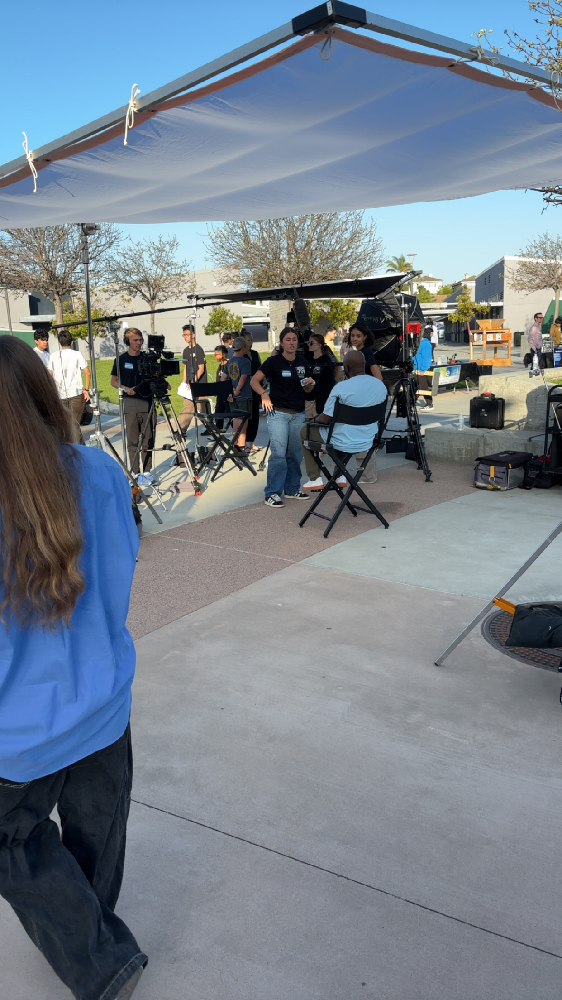
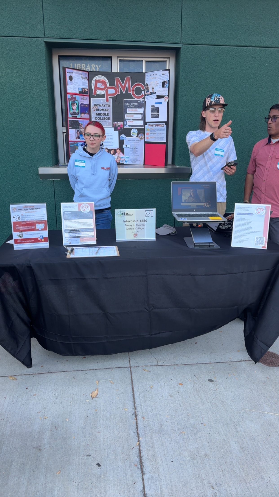
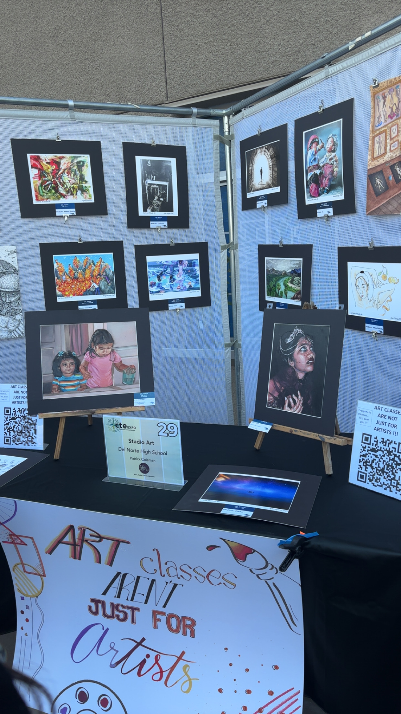

Last night I had the chance to attend the CTE (Career Technical Education) Expo, and it was honestly such an eye-opening experience. From college programs to student-built robots, here's a rundown of everything I discovered.

Palomar Middle College — High School, Internship, and College All in One
One of the most exciting things I learned about was Palomar Middle College, a unique program that blends high school, college, and real-world work experience into a single pathway.
Key Takeaways
- Dual enrollment — earn high school and college credits simultaneously, giving you a massive head start before graduation.
- All-in-one structure — combines a traditional high school education with Palomar College coursework and internship experience.
- Flexible scheduling — designed to accommodate students who want to pursue academics at their own pace alongside work or personal commitments.
- Cost-effective — taking college classes in high school significantly reduces time and money spent on a degree later.
- Career readiness — students graduate with not just a diploma and credits, but actual professional experience.

Takeaway: If you're looking to get ahead academically and professionally without waiting until after high school, Palomar Middle College is a seriously compelling option worth exploring.
Del Norte DECA Club — Business, Competition, and Life Skills
Another highlight of the night was learning about the Del Norte DECA Club, a student organization focused on business and entrepreneurship.
How to Join
You just need to be enrolled in any business-related class — it doesn't even have to be at Del Norte. That low barrier to entry makes it accessible to a wide range of students.
Clusters
Members participate in case studies where they recreate and solve real business situations based on their chosen cluster:
Competitions
DECA members attend around 3 competitions per year, with the chance to earn medals and recognition. But even beyond the hardware, competitions help you:
- Sharpen your public speaking and presentation skills
- Think critically and solve problems under pressure
- Build professional communication skills useful in any career
Takeaway: DECA is one of those clubs where the benefits go far beyond what's on the surface. Even if business isn't your passion, the skills you gain are genuinely life-changing.
Student Art — Photography & Drawing
Walking through the Expo, I was able to take in some of the artwork created by photography and drawing students, and it was genuinely impressive. The creativity and talent on display was a great reminder of the artistic side of CTE programs that often gets overlooked.

Robotics — Where Engineering Comes to Life
One of the coolest parts of the night was seeing the robotics devices built by students. Two stood out in particular:
An automated mechanism that launches balls, showcasing mechanical design and programming.
Capable of moving around on command, demonstrating precision engineering and control systems.
Seeing student-built machines actually work was a powerful reminder of what's possible when you combine technical education with hands-on creativity.
Final Thoughts
The CTE Expo was a genuinely fun and inspiring evening. Whether it was learning about programs like Palomar Middle College, discovering extracurriculars like DECA, or simply appreciating the incredible things students are building and creating — it was a reminder that there are so many exciting opportunities available, and it's never too early to start exploring them.
If you ever get the chance to attend a CTE Expo, go. You might just find your next big passion.